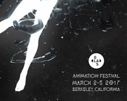
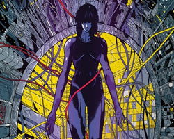
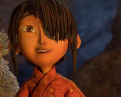

noticias

GLAS Animation Festival Revela un Trailer Espectacular de la Edicion 2017
Mira el trailer, y enterate como participar en el GLAS Animation Festival 2017 Competencia de GIF por una chance de ganar $500 dolares!

‘Ghost in the Shell’ Steelbook Edition Llega el 14 de Marzo
El nuevo lanzamiento de Anchor Bay de la película de anime revolucionaria dirigida por Mamoru Oshii presenta Mondo Artwork de edición limitada en un paquete de colección Steelbook.

LAIKA’s ‘Kubo and the Two Strings’ gana animación caracteristica en BAFTA Award
La cabeza de LAIKA, director y productor de 'Kubo', Travis Knight, recibe el primer premio BAFTA del estudio; El libro de la selva de Disney premiado por efectos visuales especiales.